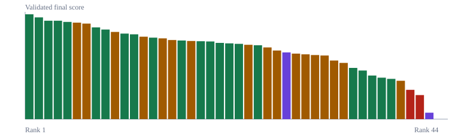

Ranking Table
Scores appear with rank, uncertainty band, maturity state, source sufficiency, claim fate, and audit tags.
View ranking2026-05-30-v0.4.18-public-ranking
Evidence-first public ranking tying each score to uncertainty bands, claim fates, source audits, calibration guardrails, and paper-level evidence.

Evaluation map
Scores appear with rank, uncertainty band, maturity state, source sufficiency, claim fate, and audit tags.
View rankingEach paper page connects the scoring report, source audit, evidence pack, withheld-signal status when present, and nearby rank comparisons.
Open rank 1 paperDedicated audit pages track uncertainty, robustness, withheld-signal policy, claim fates, source audits, and evidence packs.
Review guardrailsAdjacent-rank comparisons expose small score gaps, uncertainty-band overlap, cap-bound cases, claim-level splits, and maturity-mixed pairs.
Compare ranks| Rank | Paper | Score | Maturity | Claim fate | Source | Audit tags |
|---|---|---|---|---|---|---|
| 1 | hep-th/9711200The Large N Limit of Superconformal Field Theories and Supergravity | 99.098.2-99.8 | mature validated | paper-level | high source low miss | withheld signal stable anchor |
| 2 | hep-th/9601029Microscopic Origin of the Bekenstein-Hawking Entropy | 97.797.3-98.1 | mature validated | paper-level | high source low miss | stable anchor |
| 3 | hep-th/0603001Holographic derivation of entanglement entropy from AdS/CFT | 96.395.9-96.7 | mature validated | paper-level | high source low miss | cluster order sensitive |
| 4 | hep-th/9510017Dirichlet-Branes and Ramond-Ramond Charges | 96.395.9-96.7 | mature validated | paper-level | high source low miss | cluster order sensitive |
| 5 | 1412.5148Generalized Global Symmetries | 95.895.0-96.6 | mature validated | paper-level | high source low miss | withheld signal cluster order sensitive |
| 6 | 1905.08255Entanglement Wedge Reconstruction and the Information Paradox | 95.594.3-96.7 | active unresolved | 2 score / 2 diagnostic | high source low miss | claim level immature or active unresolved |
| 7 | 1905.08762The entropy of bulk quantum fields and the entanglement wedge of an evaporating black hole | 95.193.9-96.3 | active unresolved | 3 score / 1 diagnostic | high source low miss | claim level immature or active unresolved |
| 8 | hep-th/0105097Hierarchies from Fluxes in String Compactifications | 93.593.1-93.9 | mature validated | paper-level | high source low miss | cluster order sensitive |
| 9 | hep-th/9802109Gauge Theory Correlators from Non-Critical String Theory | 92.692.2-93.0 | mature validated | paper-level | high source low miss | cluster order sensitive |
| 10 | hep-th/9610043M Theory As A Matrix Model: A Conjecture | 91.690.4-92.8 | active unresolved | 4 score / 0 diagnostic | high source low miss | claim level immature or active unresolved |
| 11 | hep-th/0605073Aspects of Holographic Entanglement Entropy | 90.990.5-91.3 | mature validated | paper-level | high source low miss | cluster order sensitive |
| 12 | hep-th/0210114AdS dual of the critical O(N) vector model | 90.690.2-91.0 | mature validated | paper-level | high source low miss | cluster order sensitive |
| 13 | 1911.12333Replica Wormholes and the Entropy of Hawking Radiation | 89.688.4-90.8 | active unresolved | 2 score / 2 diagnostic | high source low miss | claim level withheld signal immature or active unresolved |
| 14 | 1802.04445Topological Defect Lines and Renormalization Group Flows in Two Dimensions | 89.288.8-89.6 | mature validated | paper-level | high source low miss | cluster order sensitive |
| 15 | 1911.11977Replica wormholes and the black hole interior | 88.987.7-90.1 | active unresolved | 2 score / 3 diagnostic | high source low miss | claim level immature or active unresolved |
| 16 | hep-th/0312171Perturbative Gauge Theory As A String Theory In Twistor Space | 88.286.8-89.6 | active unresolved | 4 score / 1 diagnostic | high source low miss | claim level immature or active unresolved |
| 17 | 1802.04790Exploring 2-Group Global Symmetries | 88.087.6-88.4 | mature validated | paper-level | high source low miss | cluster order sensitive |
| 18 | 1004.0956Notes on the K3 Surface and the Mathieu group M_24 | 87.885.5-90.1 | active unresolved | 2 score / 0 diagnostic | high source low miss | claim level withheld signal immature or active unresolved |
| 19 | hep-th/0412308New recursion relations for tree amplitudes of gluons | 87.787.3-88.1 | mature validated | paper-level | high source low miss | cluster order sensitive |
| 20 | hep-th/9910096Higher spin gauge theories: Star product and AdS space | 87.687.2-88.0 | mature validated | paper-level | high source low miss | cluster order sensitive |
| 21 | 0912.3462Higher Spin Gauge Theory and Holography: The Three-Point Functions | 87.086.6-87.4 | mature validated | paper-level | high source low miss | cluster order sensitive |
| 22 | hep-th/0403047MHV vertices and tree amplitudes in gauge theory | 86.886.4-87.2 | mature validated | paper-level | high source low miss | cluster order sensitive |
| 23 | 1804.00949The M-Theory S-Matrix From ABJM: Beyond 11D Supergravity | 86.686.2-87.0 | mature validated | paper-level | high source low miss | cluster order sensitive |
| 24 | 2209.06728Words to describe a black hole | 86.285.0-87.4 | active unresolved | paper-level | high source low miss | withheld signal immature or active unresolved |
| 25 | hep-th/0501052Direct proof of tree-level recursion relation in Yang-Mills theory | 86.085.6-86.4 | mature validated | paper-level | high source low miss | cluster order sensitive |
| 26 | hep-th/0205131Massless higher spins and holography | 85.183.9-86.3 | active unresolved | 4 score / 1 diagnostic | high source low miss | claim level immature or active unresolved |
| 27 | hep-th/0502058Systematics of Moduli Stabilisation in Calabi-Yau Flux Compactifications | 83.882.6-85.0 | active unresolved | 4 score / 0 diagnostic | high source low miss | claim level immature or active unresolved |
| 28 | 2402.10129Holographic covering and the fortuity of black holes | 83.081.2-84.8 | immature | 3 score / 1 diagnostic | high source low miss | claim level withheld signal immature or active unresolved |
| 29 | hep-th/0301240de Sitter Vacua in String Theory | 82.581.1-83.9 | active unresolved | 5 score / 0 diagnostic | high source low miss | claim level immature or active unresolved |
| 30 | 2011.01953The statistical mechanics of near-BPS black holes | 82.281.0-83.4 | active unresolved | paper-level | high source low miss | immature or active unresolved |
| 31 | 1207.4485ABJ Triality: from Higher Spin Fields to Strings | 81.980.7-83.1 | active unresolved | 4 score / 0 diagnostic | high source low miss | claim level immature or active unresolved |
| 32 | 2208.02757Topological Defect Lines in Two Dimensional Fermionic CFTs | 81.780.5-82.9 | active unresolved | paper-level | high source low miss | immature or active unresolved |
| 33 | 1306.0533Cool horizons for entangled black holes | 79.678.1-81.1 | active unresolved | 5 score / 0 diagnostic | high source low miss | claim level withheld signal immature or active unresolved |
| 34 | 1806.08362De Sitter Space and the Swampland | 78.676.9-80.3 | active unresolved | 5 score / 0 diagnostic | high source low miss | claim level withheld signal immature or active unresolved |
| 35 | 1907.03363JT Gravity and the Ensembles of Random Matrix Theory | 76.576.0-77.0 | mature validated | paper-level | high source low miss | withheld signal cluster order sensitive |
| 36 | 1405.0412BPS State Counting in N=8 Supersymmetric String Theory for Pure D-brane Configurations | 75.475.0-75.8 | mature validated | paper-level | high source low miss | stable anchor |
| 37 | 1604.07818Comments on the Sachdev-Ye-Kitaev model | 73.372.3-74.3 | mature validated | 4 score / 0 diagnostic | high source low miss | claim level withheld signal cluster order sensitive |
| 38 | 1706.03917Gluon Amplitudes as 2d Conformal Correlators | 72.472.0-72.8 | mature validated | paper-level | high source low miss | cluster order sensitive |
| 39 | 0906.0591The unwarped, resolved, deformed conifold: fivebranes and the baryonic branch of the Klebanov-Strassler theory | 71.971.3-72.5 | mature validated | paper-level | high source low miss | cluster order sensitive |
| 40 | 2006.06872The entropy of Hawking radiation | 71.169.9-72.3 | active unresolved | paper-level | high source low miss | immature or active unresolved |
| 41 | 0809.4266The Kerr/CFT Correspondence | 67.365.0-69.6 | mature invalidated | 3 score / 0 diagnostic | high source low miss | claim level cap bound withheld signal cap sensitive |
| 42 | 1001.0785On the Origin of Gravity and the Laws of Newton | 65.162.6-67.6 | mature invalidated | 5 score / 0 diagnostic | high source low miss | claim level cap bound cap sensitive |
| 43 | 2312.07820Celestial Leaf Amplitudes | 57.755.9-59.5 | immature | paper-level | high source low miss | withheld signal immature or active unresolved |
| 44 | 0706.3359Three-Dimensional Gravity Revisited | 55.053.5-56.5 | mature invalidated | paper-level | high source low miss | cap bound withheld signal cap sensitive |